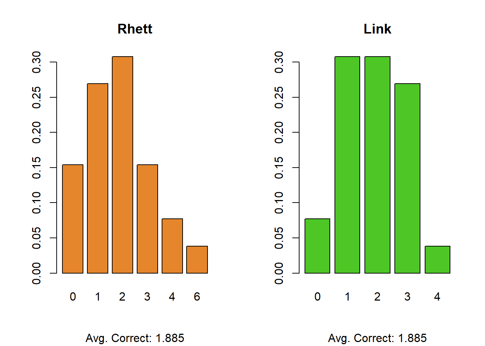
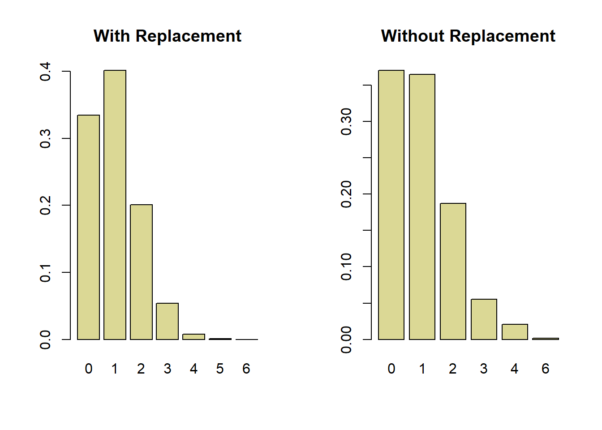

While normally this would qualify as pretty generic YouTube content, Good Mythical Morning keeps it interesting by “gamifying” many of these segments. These including making the hosts try gross food mash-ups, throw darts at a map to guess the food’s country of origin, or use a shuffleboard to guess the decade the food originated from.
One of the games that is common on the channel is the Blind Taste Test where Rhett and Link are presented with food items from different fast food or restaurant chains, and are tasked with guessing which items come from which location. For example, in the Blind Chicken Nugget Taste Test they are given nuggets from 6 locations (McDonalds, Wendys, Chic-Fil-A, Hardees, KFC, and Frozen Tyson Nuggets) and have to try and place them based on taste alone. It’s silly content, but fun.
How Good Are They?
One nagging question I’ve always had is whether their performance on these segments were any better than if they just randomly guessed each time. Blind taste-testing is actually very hard, and distinguishing between 6 different pieces of mass-produced fried meat is probably even harder. Indeed, their performance on a lot of these segments is actually not great. To answer this, I gathered data from all the blind fast food taste tests that I could find, and collected it into a Google Sheet. Most of the games have 6 options, but a few have 5. For simplicity I will focus on the 26 segments where there were six choices available.
First, let’s look at the distribution of correct guesses for Rhett and Link. We can generate just a simple bar chart here:
Code
# Plot R v L# ---------------# plot observed correct answers for R&Lpar(mfrow =c(1,2))barplot(prop.table(table(taste_test$rhett)), main ="Rhett", sub =paste0("Avg. Correct: ",round(mean(taste_test$rhett),3)),col ='#e6862c')barplot(prop.table(table(taste_test$link)), col ='#4ec726', sub =paste0("Avg. Correct: ",round(mean(taste_test$link),3)),main ="Link")

Strangely enough, based on the 26 games that I collected, Rhett and Link have the exact same number of correct guesses. We can see, however, that their distributions are quite different (Rhett has a single game with all 6 right, and several with 4 correct, but also many more games with none correct). As expected, across all games we see their average is about 1.9 correct answers. Now, recall, our question here is “is Rhett and Link’s performance better than chance alone?”
Random Guessing With Replacement
So if we want to compare their performance to “chance” - that is, totally random guessing - we need a probability distribution. Here, the binomial is logical starting point. Let’s start with the simplest assumption of randomly guessing one of the six options with replacement (meaning you can guess the same option twice). While this doesn’t necessarily seem like an ideal strategy, Rhett and Link often do guess the same location two or three times.
We can use the probability density function for the binomial distribution to calculate the probability of guessing between 0 and 6 items correctly, where each trial is assumed to be independent. Below, we see that there is about a 67% probability of guessing at least one of the items correctly, and a 40% chance of getting exactly one correct. Getting more than 4 correct is very rare. If we look at the observed results above, we see this mostly matches up. Both Rhett and Link rarely get more that 3 correct.
Code
# totally random (w replacement)round(dbinom(0:6, 6, 1/6), 3)
[1] 0.335 0.402 0.201 0.054 0.008 0.001 0.000
Random Guessing Without Replacement
Now, another strategy might be randomly guess, but not repeat any previous guesses. Instead of the guesses being independent, they are now dependent on prior guesses. That means we need to use a different method to calculate this. The hypergeometric distribution is commonly used to calculate this (e.g. dhyper()). This also falls within the realm of permutation-based math ala derangements. However, I am a simple man with a good computer and a less-good maths background, so I will simply simulate it.
Here we see that if we limit our guesses to only options not previously guessed, there is a roughly equal probability of getting between 0 and 1 answers correct, and about a 28% chance of getting more than 1 correct. Note, under this strategy it is not possible to get 5 answers correct (because if you incorrectly order at least one item, by definition at least one other item is also incorrectly ordered)
Are Rhett and Link Better than Random Guessing?
Let’s review our results here. Here’s what random guessing looks like under our two scenarios:
Code
# plot two different 'null' distributionspar(mfrow =c(1, 2))barplot(prop.table(round(dbinom(0:6, 6, 1/6), 3)),names.arg =0:6, main ="With Replacement", col ="#dbd895")barplot(prop.table(table(res)), main ="Without Replacement",col ="#dbd895")

And here’s what Rhett and Link’s actual results look like:
Code
# plot observed correct answers for R&Lpar(mfrow =c(1,2))barplot(prop.table(table(taste_test$rhett)), main ="Rhett", sub =paste0("Avg. Correct: ",round(mean(taste_test$rhett),3)),col ='#e6862c')barplot(prop.table(table(taste_test$link)), col ='#4ec726', sub =paste0("Avg. Correct: ",round(mean(taste_test$link),3)),main ="Link")
The expected value of random guessing in both scenarios is, approximately 1, meaning that Rhett and Link’s scores of 1.8 mean that, on average, they perform marginally better than if you guessed completely at random. This is on the order of about 1 additional item correct compared to just guessing 100% randomly.
Code
# expected valuemean(rbinom(1e5, 6, 1/6))
[1] 1.00159
Code
mean(res)
[1] 0.99781
So, congrats Rhett and Link! You are a little bit better at blind tasting fast food than rolling a six-sided dice!